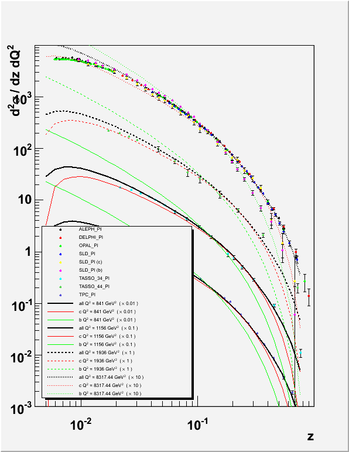
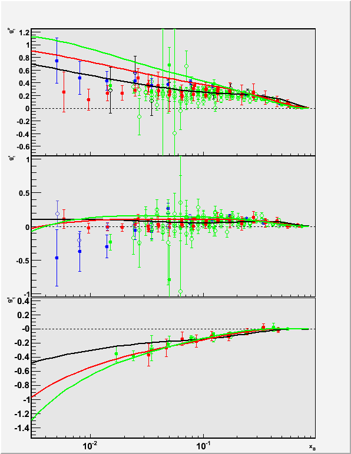
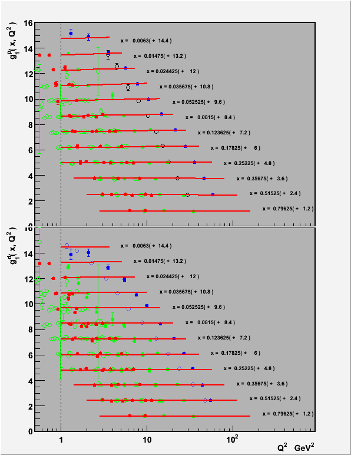

<html>
<head>
<link href="mellin.css" rel="stylesheet" type="text/css">
</head>
<body>

<div id="navigator"><a href="index.html">HOME</a></div>

<h1> Fitting $B%i%$%V%i%j(B </h1>

<tt>TMinuit</tt>$B$r$D$+$C$F!"CGLL@Q$d9=B$4X?t$N%G!<%?!<$r(B
$B%U%#%C%H$9$k$?$a$N%/%i%9%i%$%V%i%j$G$9!#(B
Xsec$B%i%$%V%i%jCf$N(BPDF$B$O(BEvolution$B%i%$%V%i%j$r%Y!<%9$H$7$F$$$^$9!#(B
$B$=$N=i4|J,I[4X?tCf$N%Q%i%a!<%?!<$O30It$+$iJQ992DG=$J$N$G!"(B
$B%U%#%C%F%#%s%0$K$h$C$F!":GE,CM$r7h$a$^$9!#(B


<h2> Fit::Fitting $B%/%i%9$N;H$$J}(B </h2>

$B4pK\E*$K$O(BFit::Fitting$B%/%i%9$r7Q>5$7$F!"(B
$B7Q>5$7$?%/%i%9$G(B
<tt>calc( const int& i )</tt>
$B%a%=%C%I$r<BAu$7!"(B
$B$=$NCf$G(Bi$BHVL\$N%G!<%?!<$KBP$9$k(B
&chi;<sup>2</sup>$B$NCM$r7W;;$7$^$9!#(B
<span style="font-weight:bold;">
<u>$B7W;;7k2L$O(B<tt>fit_[ i ]</tt>$B$KBeF~$7$F$/$@$5$$!#(B</u>
</span>

<p>

$B$^$?(BKernel$BCf$N(BPdfParameterization$B%*%V%8%'%/%H$N%Q%i%a!<%?!<$r(B
TMinuit$B$G%3%s%H%m!<%k$9$k$?$a$K!"(BXsection::Xsec $B%*%V%8%'%/%H(B
$B$X$N%]%$%s%?!<$r(BsetModel$B%a%=%C%I$GEO$7$^$9!#$3$N%a%=%C%ICf$G$O(B
$BMxMQ$5$l$F$$$k(BPdfParameterization$BCf$N(BPdfBase$B%*%V%8%'%/%H$,4IM}(B
$B$7$F$$$k%Q%i%a!<%?$H(BMinuit$B$N%Q%i%a!<%?!<$r4X78IU$1$F$$$^$9!#(B

</p>


<h3>$B%G%P%C%/MQ%3%a%s%H(B</h3>

<tt>Makefile</tt>$B$G(B<tt>EXTRA_CPPFLAGS = -DDEBUG_FITTING</tt>$B$r(B
$BM-8z$K$9$k$H!"3F(B&chi;<sup>2</sup>$B$N7W;;Kh$K(B1$B9T$N%G%P%C%0MQ%3%a%s%H$,(B
$B=PNO$5$l$^$9!#(B

<tt>Makefile.am</tt>$B$G$O!"%G%P%C%/%3%a%s%H!VIU$-!W!VL5$7!W$N#2$D$N<B9T(B
$B%U%!%$%k$r:n@.$9$k$h$&$K$J$C$F$$$^$9!#;29M$K$7$F$/$@$5$$!#(B


<h2> Fitting $B$N;EJ}(B </h2>

$B%U%#%C%H$r9T$&>l9g$O(BFitting$B%i%$%V%i%j$N(BFitting$B%/%i%9$r7Q>5(B
$B$7$?%/%i%9$rMxMQ$7$^$9!#%5%s%W%k$H$7$F(B
<tt>testFragXsecFit</tt>$B!"(B
<tt>testG1Fit</tt>$B$,MQ0U$5$l$F$$$^$9!#(B
$B$^$?!"%G%P%C%0MQ=PNO$,M^@)$5$l$?<B9T%U%!%$%k$b(B
<tt>fitFragXsec</tt>$B!"(B<tt>fitG1</tt>$BMQ0U$5$l$F$$$^$9!#(B
<pre id="command">
Mellin $ make
</pre>
$B$r9T$&$H!"$3$l$i$N<B9T%U%!%$%k$,(B
<tt>Fitting</tt>$B%G%#%l%/%H%j$N2<$K$G$-$^$9!#(B
<tt>fitFragXsec</tt>$B!"(B<tt>fitG1</tt>$B$O(B
<pre id="command">Mellin $ make install</pre>
$B$H$9$k$H!"(B<tt>${HOME}/mellin/bin</tt>$B$N2<$K%$%s%9%H!<%k$5$l$^$9!#(B

<h3>$B%W%m%0%i%`$N;H$$J}(B</h3>

$B<B9T%U%!%$%k$N;H$&$?$a$K$O!":GDc8B2<$N%*%W%7%g%s%j%9%HCf$N(B
<span id="comment">$B@V;z(B</span>$B$N$b$N$r;XDj(B
$B$9$kI,MW$,$"$j$^$9!#(B
<tt>testFragXsecFit</tt>$B!"(B<tt>fitFragXsec</tt>$B$N>l9g$G$"$l$P(B
<tt id="comment">--expdata=...</tt>$B!"(B
<tt id="comment">--FF=...</tt>$B$G$9!#(B
<p>
$B$^$?I,MW$J4D6-JQ?t(B(
<tt style="color:blue">MELLIN_CACHE_DIR</tt>$BEy!K(B
$B$r@_Dj$9$k$?$a$K!"(B<tt>setup.sh</tt>$B%U%!%$%k$rFI$_9~$_$^$9!#(B
<pre id="command">
Mellin$ source setup.sh
</pre>
$B$b$7$/$O(B
<pre id="command">
~$ source ~/mellin/bin/setup.sh
</pre>
$B2<$NJ}K!$G$O(B<tt>~/mellin/bin</tt>$B$,(B<tt>PATH</tt>$B$K$5$l$k$N$G!"(B
$B%U%#%C%F%#%s%0%W%m%0%i%`(B(<tt>fitFragXsec</tt>$B!"(B<tt>fitG1</tt>)
$B$X$N%Q%9$rL@<($7$J$/$F$b<B9T$G$-$k$h$&$K(B
$B$J$j$^$9!#0J2<$NNc$G$O<B9T%U%!%$%k$X$N%Q%9$OL@<($7$^$;$s!#(B
<p>
<dl>
 <dt>$B<B9TNc(B</dt>
 <dd> $B4pK\E*$J(B<tt>fitFragXsec</tt>$B$N<B9TNc$G$9!#(B
<pre id="command">
$ fitFragXsec <span style="color:red">--FF=${MELLIN_TOP}/config/FF_disfavored.xml</span>     \
                  <span style="color:red">--expdata=${MELLIN_TOP}/ExpData/fragXsecPi.html</span> \
                  --zmin=0.05 --zmax=0.8                          \
                  <span style="color:red">--fit=pion</span>                                      \
                  --writeDB | tee fitFragXsec.log
</pre>
      $B85!9$N(BMinuit$B%i%$%V%i%j$H$O0c$$!"%U%#%C%H$N7P2a$r%U%!%$%k$K(B
      $BJ]B8$9$k$h$&$K$O$J$C$F$$$^$;$s!#(B
      $BI8=`=PNO$rI=<($7$D$D%U%!%$%k$K5-O?$r$H$j$?$$>l9g$O!"(B
      $B>e5-$N$h$&$K(B<tt>tee</tt>$B%3%^%s%I$r;H$C$F$/$@$5$$!#(B
      </dd>
      
 <dt> $B=PNO%U%!%$%k(B </dt>
 <dd> $B%U%#%C%H%W%m%0%i%`$r<B9T$9$k$H!"$$$/$D$+=PNO%U%!%$%k$,@8@.$5$l$^$9!#(B
      <ul>
       <li> <tt style="color:blue;font-weight:bold;">last_param_0.xml</tt>:
	    $BD>A0$N(B&chi;<sup>2</sup>$B7W;;$K;H$o$l$?%Q%i%a!<%?!<>pJs$H!"(B
	    $BF@$i$l$?(B&chi;<sup>2</sup>$BEy$N(B
	    $B%U%#%C%H$N7k2L$,J]B8$5$l$F$$$^$9!#(B
	    $B%U%)!<%^%C%H$OF~NO$KMxMQ$5$l$?@_Dj%U%!%$%k$K$7$?$,$&$N$G!"(B
	    $B%U%#%C%H$rCfCG$7$?>l9g!"$3$N%U%!%$%k$r;XDj$9$k;v$G(B
	    $BESCf$N%Q%i%a!<%?!<$NCM$+$i%U%#%C%H$r:F3+$G$-$^$9!#(B
	    <p>
	    $B$b$7%U%#%C%H$K;H$o$l$F$$$k%b%G%k$,!"(B
	    $BFs$D0J>e$N%Q%i%a!<%?!<%;%C%H(B($BNc!'(BFF$B$H(BpolPDF)$B$r;H$&>l9g$O(B
	    <tt>last_param_0.xml</tt>$B!"(B
	    <tt>last_param_1.xml</tt>
	    $B$N$h$&$KFs$D$N%U%!%$%k$,@8@.$5$l$^$9!#(B
	    </p>
	    </li>
	    
       <li>
	    <tt style="color:blue;font-weight:bold;">
	    FF_NLO_-zmin-zmax.xml </tt>:
	    <u><tt>fitFragXsec</tt>$B8BDj!#(B</u>
	    $B%U%#%C%H$,=*N;$7$?>l9g!":G=*7k2L$,J]B8$5$l$k!#(B
	    pQCD$B$N%*!<%@!<!"%U%#%C%H;~$N(B
	    <i>z</i>$B$NHO0O$,%U%!%$%kL>$K4^$^$l$k!#(B
	    </li>
	    
      </ul>
      </dd>
      
 <dt> $B%9%/%j%W%H(B(fitting.sh) </dt>	    
 <dd> $B%P%C%A%7%9%F%`$rMxMQ$9$k$H!"J#?t$N%U%#%C%H%W%m%0%i%`$r8zN(NI$/(B
      $B4IM}$G$-$^$9!#(B
      <tt>${HOME}/mellin/bin/fitting.sh</tt>
      $B$H$7$F%9%/%j%W%H%5%s%W%k$r$*$$$F$*$-$^$7$?!#(B
      <p>
      $B%P%C%A%7%9%F%`$G$3$N(B<tt>fitting.sh</tt>$B$r<B9T$7$?$$$H$-;~$O!"(B
      $BE,Ev$J%U%!%$%k(B($BNc!'(B<tt>qsub.sh</tt>$B!K$r<!$N$h$&$JFbMF$G:n@.$7!"(B
<pre id="file">
#!/bin/bash

export SETUP=~/mellin/bin/setup.sh
export SCRIPT=~/mellin/bin/fitting.sh
export EXEC=fitFragXsec
export DATA=${MELLIN_TOP}/ExpData/fragXsecPI.xml
export FF=${MELLIN_TOP}/conf/FF_disfavored.xml
export ZMIN=0.03
export ZMAX=0.8
export WRITEDB=yes

qsub -v SETUP,EXEC,DATA,FF,ZMIN,ZMAX,WRITEDB -q L -N "J0.03-0.8" ${SCRIPT}
</pre>
      $B<B9T5v2D$rM?$((B
<pre id="command">
$ chmod 755 qsub.sh
</pre>
      $B%9%/%j%W%H$r<B9T$9$k$H(B
<pre id="command">
$ ./qsub.sh
</pre>
      <tt>fitting.sh</tt>$B$r%P%C%A%7%9%F%`$KEj$2$k;v$,$G$-$^$9!#(B
      $B%P%C%A%7%9%F%`$N>\:Y$O(B
      <a href="http://www/document/network/OpenPBS.html">
      $B<FED8&5f<<FbIt8~$1%[!<%`%Z!<%8(B</a>$B$r;2>H$7$F$/$@$5$$!#(B
      </p>

      <p>
      <tt>fitting.sh</tt>$B$N@bL@(B:<br>
      $B%9%/%j%W%H$NF0:n4IM}$O<g$K4D6-JQ?t$K$h$C$F9T$$$^$9!#(B
      $B%9%/%j%W%HCf$G$D$+$o$l$k4D6-JQ?t0lMw$O!"0z?t$J$7$G(B
      <tt>fitting.sh</tt>$B$r5/F0$9$k$H2hLL$K=PNO$5$l$^$9!#(B
<pre id="command">
Mellin $ ./script/fitting.sh
Usage:   ./script/fitting.sh
  This script requires several enviroment variables.
These variables must be properly set before calling ./script/fitting.sh.
<span id="comment">  SETUP    path to the mellin setup.sh script
              e.g., /home/miyachi/mellin/bin/setuip.sh
  EXEC     executable program to be performed.
               (basename must be fitFragXsec,fitG1,...)
  DATA     Experiment data file to be fitted.
</span>
These must be set depending on 
<span id="comment">  FF Fragmentation function initial distribution file
  polPDF   Helicity distribution function initial distribution file
</span>
There is also optional variables to control ./script/fitting.sh.
  WRITEDB  require --writeDB option
  CONTOUR  create CONTOUR plot file named with the variable
  OFFSET   Mellin inversion path starting point
  ANGLE    Mellin inversion path angle unit in PI.
  LENGTH   Mellin inversion path lenght
  ORDER    pQCD calculation order (LO|NLO)
  ZMIN     lower limit for z ( for fitFragXsec )
  ZMAX     upper limit for z ( for fitFragXsec )
  OUTPUT   output directory name under .....
  OPTIONS  arguments list to be given to EXEC program
    
Example:
SETUP=~/mellin/bin/setup.sh EXEC=fitFragXsec FF=FF.xml DATA=data.xml ZMIN=0.04 ZMAX=0.8 WRITEDB=yes  ./script/fitting.sh 
SETUP=~/mellin/bin/setup.sh EXEC=fitFragXsec FF=FF.xml DATA=data.xml qsub -v SETUP,EXEC,FF,DATA ./script/fitting.sh
</pre>
      <tt>OUTPUT</tt>$B4D6-JQ?t$r@_Dj$7$F$*$/$H!"(B
      $B%9%/%j%W%H$r5/F0!J$b$7$/$O(B<tt>qsub</tt>$B$r5/F0!K$7$?(B
      $B%G%#%l%/%H%j$N2<$K(B<tt>${OUTPUT}</tt>$B%5%V%G%#%l%/%H%j$r:n@.$7!"(B
      $B$=$NCf$K%U%#%C%H$N=PNO%U%!%$%k$r$9$Y$F%3%T!<$7$^$9!#(B
      </p>
      $B>\$7$$FbMF$O%9%/%j%W%H$NCf?H$rD>@\$_$F$/$@$5$$!#(B
      </dd>
      
</dl>

<h3>$B%*%W%7%g%s0lMw(B</h3>

<dl>
 <dt> $B6&DL%*%W%7%g%s(B </dt>
 <dd>
      <ul>

       <li> <tt>--angle=[value]</tt>:
	    <a href="MellinInversion.html#straight">$BD>@~@QJ,7PO)(B</a>
	    $B$N3QEY(B&pi;$B$KBP$9$k3d9g$GM?$($k!#(B
	    $B5u<4$KJ?9T$J>l9g$O(B<span style="color:red;"> 0.5 </span>$B!#(B
	    </li>
	    
       <li> <tt>--offset=[value]</tt>:
	    <a href="MellinInversion.html#straight">$BD>@~@QJ,7PO)(B</a>
	    $B3+;OE@!J<B!K:BI8(B
	    </li>

       <li> <tt>--length=[value]</tt>:
	    <a href="MellinInversion.html#straight">$BD>@~@QJ,7PO)(B</a>
	    $B$N7PO)D9(B
	    </li>
       <li> <tt id="comment">--expdata=[data file]</tt>:
	    $B%U%#%C%H$9$Y$-<B83%G!<%?%U%!%$%k!#(B
	    <a href="expdata.html"><tt>ExpData</tt>$B%i%$%V%i%j$r$D$+$C$F(B
	    $B@8@.$7$?(BXML$B%U%!%$%k(B</a>$B$N>l=j$r;XDj$9$k!#(B
	    </li>

       <li> <tt>--contour=[root file name]</tt>:
	    $B#2%Q%i%a!<%?!<4V$N(B&chi;<sup>2</sup> contour plot$B$r:n$k!#(B
	    $B!J!vCm!!<B9T;~4V$,D9$/$J$k!K(B
	    </li>

       <li> <tt>--Minuit=[Minuit command or command file]</tt>:
	    <br>
	    MINUIT$B$N%3%^%s%I$r(B<tt>"|"</tt>$B6h@Z$j$G;XDj2DG=!#(B
	    $B%3%^%s%I$,Bt;3$"$k>l9g$O!"(B1$B9T#1%3%^%s%I$GNs5-$7$?%F%-%9%H(B
	    $B%U%!%$%k$r;XDj$9$k;v$b2DG=!#(B
	    $B$3$N%*%W%7%g%s$,;XDj$5$l$J$$>l9g$O(B
	    <tt>MIGRAD</tt>$B$,8F$S=P$5$l$k!#(B
	    </li>

       <li> <tt>--MinuitPrintLevel=[Log$B%l%Y%k(B]</tt>:
	    MINUIT$B$N(BLOG$B%l%Y%k$r;XDj$G$-$k!#(B
	    </li>

       <li> <tt>--writeDB</tt>:
	    $B%-%c%C%7%e%U%!%$%k=q$-9~$_%*%W%7%g%s(B
	    </li>

       <li> <tt>--order=[LO|NLO]</tt>:
	    </li>
	    
       <li> <tt>--errorMatrix</tt>:
	    Parameterization file$B$K(Berror matrix $B>pJs$r=q$-=P$9!#(B
	    </li>

       <li> <tt>--iteration=[n]</tt>:
	    $B7+$jJV$7:GBg2s?t$r@_Dj$9$k!#4{DjCM$O(B1000$B!#(B
	    </li>


       <li> <tt>--alphaMz=[$B?t;z(B]</tt>:
	    Z<sup>0</sup>$B<ANL%9%1!<%k$G$N(B&alpha;<sub>s</sub>$B$NCM(B
	    </li>

       <li> <tt id="comment">--FF=[file name]</tt>:
	    &pi;$BGK:U4X?tMQ$N%Q%i%a!<%?!<@_Dj%U%!%$%k(B(XML)$B$r;XDj$9$k(B
	    </li>
       <li> <tt id="comment">--FFK=[file name]</tt>:
	    K$BGK:U4X?tMQ$N%Q%i%a!<%?!<@_Dj%U%!%$%k(B(XML)$B$r;XDj$9$k(B
	    </li>
       <li> <tt id="comment">--FFR=[file name]</tt>:
	    Rest$BGK:U4X?tMQ$N%Q%i%a!<%?!<@_Dj%U%!%$%k(B(XML)$B$r;XDj$9$k(B
	    </li>
       <li> <tt id="comment">--KretzerFF=[file name]</tt>:
	    &pi;$BGK:U4X?tMQ$N%Q%i%a!<%?!<@_Dj%U%!%$%k(B(XML)$B$r;XDj$9$k!#(B
	    Kretzer$B$HF1$8>r7o$r$+$9!#(B
	    </li>
       <li> <tt id="comment">--KretzerFFK=[file name]</tt>:
	    Ka$BGK:U4X?tMQ$N%Q%i%a!<%?!<@_Dj%U%!%$%k(B(XML)$B$r;XDj$9$k!#(B
	    Kretzer$B$HF1$8>r7o$r$+$9!#(B
	    </li>
       <li> <tt id="comment">--KretzerFFR=[file name]</tt>:
	    Rest$BGK:U4X?tMQ$N%Q%i%a!<%?!<@_Dj%U%!%$%k(B(XML)$B$r;XDj$9$k!#(B
	    Kretzer$B$HF1$8>r7o$r$+$9!#(B
	    </li>
       <li> <tt id="comment">--DSSFF=[file name]</tt>:
	    &pi;$BGK:U4X?tMQ$N%Q%i%a!<%?!<@_Dj%U%!%$%k(B(XML)$B$r;XDj$9$k!#(B
	    DSS$B$HF1$8>r7o$r$+$9!#(B
	    </li>
       <li> <tt id="comment">--DSSFFK=[file name]</tt>:
	    Ka$BGK:U4X?tMQ$N%Q%i%a!<%?!<@_Dj%U%!%$%k(B(XML)$B$r;XDj$9$k!#(B
	    DSS$B$HF1$8>r7o$r$+$9!#(B
	    </li>
       <li> <tt id="comment">--DSSFFR=[file name]</tt>:
	    Rest$BGK:U4X?tMQ$N%Q%i%a!<%?!<@_Dj%U%!%$%k(B(XML)$B$r;XDj$9$k!#(B
	    DSS$B$HF1$8>r7o$r$+$9!#(B
	    </li>
       <li> <tt id="comment">--polPDF=[file name]</tt>:
	    &Delta;q $BMQ(B
	    $B%Q%i%a!<%?!<@_Dj%U%!%$%k(B(XML)$B$r;XDj$9$k(B
	    </li>
       <li> <tt id="comment">--unpolPDF=[file name]</tt>:
	    $BHsJP6KJ,I[4X?tMQ(B
	    $B%Q%i%a!<%?!<@_Dj%U%!%$%k(B(XML)$B$r;XDj$9$k(B
	    </li>
       <li> <tt id="comment">--fit=[$B%U%#%C%H$G7hDj$9$k$b$N(B]</tt>:
	    $B%U%#%C%H$G7hDj$9$Y$-GK:U4X?t!"J,I[4X?t$r;XDj!#(B
	    <tt>pion|</tt>$B!"(B
	    <tt>kaon</tt>$B!"(B
	    <tt>rest</tt>$B!"(B
	    <tt>hadron</tt>$B!"(B
	    <tt>unpolPDF</tt>$B!"(B
	    <tt>polPDF</tt>
	    $B$+$i;XDj$9$k!#J#?t;XDj$9$k>l9g$O(B","$B$G6h@Z$k!#(B
	    $B!JNc!'(B<tt>--fit=pion,polPDF</tt>$B!K(B
	    </li>

      </ul>
      
      
      </dd>
      
 <dt><tt>FragXsecFit</tt>$B%*%W%7%g%s(B</dt>
 <dd>
      <ul>
       <li> <tt>--zmin=[value]</tt>: <tt>z</tt>$B2<8BCM(B
	    </li>
       <li> <tt>--zmax=[value]</tt>: <tt>z</tt>$B>e8BCM(B
	    </li>
       <li> <tt>--laguerre=[n=5]</tt>:
	    Steepest Decent Contour$B>e(B $B$G(B n-$B<!$N%i%2!<%k@QJ,$r9T$&!#(B
	    </li>
       <li> <tt>--steepestMap=[cmap.dat]</tt>:
	    Sttepest Decent Contour $B$N7PO)%Q%i%a!<%?!<(B
	    $BFI$_=P$7!&J]B8%U%!%$%kL>$r;XDj(B
	    </li>
      </ul>
      </dd>
      
 <dt> <tt>G1Fit</tt>$B%*%W%7%g%s(B</dt>
 <dd>
      <ul>
       <li> <tt>--xmin=[value]</tt>: <tt>x</tt>$B2<8BCM(B
	    </li>
       <li> <tt>--xmax=[value]</tt>: <tt>x</tt>$B>e8BCM(B
	    </li>
      </ul>
      </dd>


 <dt> <tt>A1hFit</tt>$B%*%W%7%g%s(B</dt>
 <dd>
      <ul>
      </ul>
      </dd>


 <dt> <tt>MultiFragFit</tt>$B%*%W%7%g%s(B</dt>
 <dd>
      <ul>
      </ul>
      </dd>

</dl>


<h2>$B%U%#%C%H$NESCf7P2a!&7k2L$r%W%m%C%H$9$k(B</h2>
<p>
<tt>browser</tt>$B%G%#%l%/%H%j$NCf$G(B<tt>mellin</tt>$B<B9T%U%!%$%k$,(B
$B:n$i$l$^$9!#$3$l$O(B
<pre id="command">
Mellin$ make install
</pre>
$B$G(B<tt>~/mellin/bin</tt>$B$K$bJ]B8$5$l$^$9!#(B
$B;H$$J}$O%U%#%C%H$N%W%m%0%i%`$HF1MM$K(B
<tt id="comment">--expdata</tt>$B!"(B
<tt id="comment">--FF</tt>$B!"(B
<tt id="comment">--KretzerFF</tt>$B$b$7$/$O(B
<tt id="comment">--polPDF</tt>$B$G<B83%G!<%?$*$h$S%Q%i%a!<%?%;%C%H$N(B
$B%U%!%$%k$r;XDj$7$^$9!#%U%#%C%H$NF~=PNO%U%!%$%k(B
(<tt>last_param_0.xml</tt>$B$b2D(B)
$B$r%Q%i%a!<%?!<%;%C%H%U%!%$%k$K;XDj$G$-$^$9!#(B
</p>
<p>
$B;H$$J}$O(B
<pre id="command">
$ mellin <span id="comment">--FF=[...] --expdata=[...]</span>
<span id="comment">ROOT$B$,N)$A>e$,$j$^$9!#(BROOT$B$K0J2<$N%3%^%s%I$rF~NO$7$^$9!#(B</span>
mellin [0] Browser::instance()->draw()
mellin [1] .q
</pre>

</p>


<h3>FragXsec$B$NNc(B</h3>

<center>

</center>

<h3>polDIF$B$NNc(B</h3>

$B%G%U%)%k%H$N>uBV$G$O!"(B
<tt id="formula">g<sub>1</sub><sup>p,d,n</sup></tt>
$B$r<B83%G!<%?$H!"7W;;CM(B
$B!J(B<tt id="formula">Q<sup>2</sup> = 1.0, 2.5,
10.0</tt> GeV<sup>2</sup></tt> $B!)!)!K(B
$B$rI=<($7$^$9!#(B
$B%*%W%7%g%s(B<tt id="comment">--weight=1.0</tt>$B$r;XDj$9$k$H(B
<tt id="formula"> x g<sub>1</sub> </tt>$B$rI=<($7$^$9!#(B

<center>

</center>

$B$^$?(B<tt id="comment">--plot=Q^2</tt>$B$r;XDj$9$k$H!"(B
<tt id="formula">Q<sup>2</sup></tt>$BH/E8$r%W%m%C%H$7$^$9!#(B

<center>

</center>


</body>
</html>
